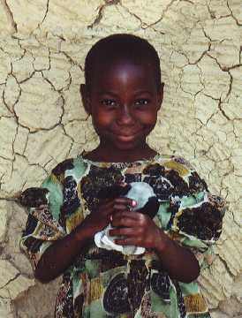

March 2000
Bram Moolenaar, the treasurer of ICCF Holland, visited the project in
Uganda. Here is his report of the trip:
Clinic
There is a small clinic at the project, which has been improved over the last
couple of years. More and more villagers know how to find the place. I was
there on a market day, when over a hundred patients came for medical help. It
was really crowded with patients waiting for treatment. On other days there
are around thirty patients. Overall there are more than two hundred patients
each week. Thus the clinic is providing a very important service to the
community. I have spoken with a few locals, who said they are very happy with
the medical help.
|
The patients pay a small fee for treatment and medicine. This doesn't cover
the actual cost though. Only through donations can we keep the clinic
running, since the patients are not able to pay a higher fee. The Lisbloem
school in Lisse (The Netherlands) raised a large amount, which has been used
to buy a solar powered fridge. It stores the medicines that have to be kept
in a cool place. The picture shows assistant nurse Boaz with the new fridge.
Boaz is one of the orphans that grew up at the centre while I was working
there in 94/95. He has been able to get an education through the sponsorship
program. I was happy to see he is now working for the centre.
There is one Ugandan nurse working full time, and a doctor visiting on market
days. Hopefully the quality of the service provided can be improved the
coming year. A small laboratory would be very useful, and more educated
staff.
|

|
School
The vocational school had just been extended with a tailoring section. I
watched the pupils enjoying their first lessons. It is in a new building,
together with the carpentry section which started last year. The school now
goes from kindergarten, through primary and secondary to the vocational
school. All teachers are now Ugandans and have proper training. There is a
total of about four hundred children, who are enjoying the high quality of
this school.
Besides running the school in Kibaale, attention is given to teachers in
schools of nearby villages. Many of these have had no more training than
primary school themselves. Teacher training is now organised to improve their
knowledge and teaching abilities. The teacher resource centre provides them
with materials.
I really enjoyed watching the children going to school. And they stay until
late in the afternoon to play football and netball. Quite an improvement
compared to the situation in 1993, when I first visited the project. Only
three classes back then, and most teachers were not trained. Now the school
is an example for the area.
Sponsorship
|

|
Many children cannot afford to pay their school fees. Therefore sponsors pay
monthly to support them. I have visited eight of the sponsored children at
their homes. The picture shows Nabasagi Morine, one of our youngest children.
She is six years old and goes to the kindergarten class.
Generally, these families are only just able to manage their household. They
have the basic things like a house, some clothes and grow their own food.
Nothing more than that. One family was below the average level though. Their
house is leaking, there are no blankets for the children and no mattresses. I
have asked the manager to give them at least a couple of blankets. Hopefully
we find a way for them to be able to take care of themselves. That is better
than have them depend on our gifts.
|
There are still a lot of children who are not sponsored. Hopefully we will
find more sponsors this year. The office that takes care of the sponsored
children, called Kibaale Childrens Fund (KCF) is running very well. There are
two Ugandans, who visit the children, managed by a Canadian volunteer. They
make sure the children are able to attend school, visit them at home and take
them to hospital when needed. I accompanied three children to hospital,
together with an assistant nurse. The garden of the hospital looks great, but
the quality of the medical care is low. But there is no other place with a
qualified doctor and a laboratory. We might try to improve our own clinic to
work around this problem.
Conclusion
I can see quite a bit of improvement since my last visit in 1998. Roads have
been fixed, there is more traffic and business. The Kibaale Childrens
Centre is running very well and mainly with Ugandan staff. The school is
operating very well, and the clinic provides health care to many patients.
The coming time will be focused on maintaining the project and further
improving the quality. I will certainly support that.
|